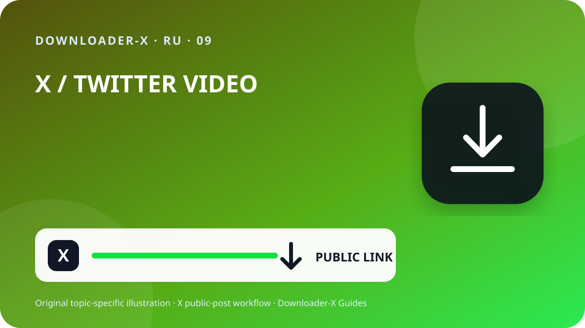

Краткий ответ
лучший сайт для скачивания видео с твиттера — Откройте отдельный пост X с видео, убедитесь, что он доступен публично, и через меню «Поделиться» скопируйте ссылку на пост. Вставьте URL в Downloader-X, выберите вариант MP4, который действительно показан, и после сохранения воспроизведите начало, середину и конец. Используйте процесс только для собственных видео, материалов с подходящей лицензией или контента с явным разрешением владельца. Для публичной ссылки не нужны пароль X, код подтверждения, cookie браузера или удалённый доступ.

Три шага с Downloader-X
- Ссылка должна определять один пост с видео. В X откройте меню «Поделиться», скопируйте ссылку на пост и один раз проверьте её в новой вкладке. URL профиля или ленты содержит несколько публикаций и не задаёт нужный файл. Такая проверка отделяет неверный адрес от сбоя сервиса и уменьшает повторные нажатия, из-за которых появляются неполные или дублирующиеся файлы.
- Вставьте проверенный URL в загрузчик X и запустите обработку один раз. Дождитесь фактических вариантов и сравните заголовок или превью с исходным постом. Выбирайте только форматы и разрешения, которые действительно отображены. Не считайте обещание 4K, 1080p или отсутствия водяного знака реальной возможностью, если источник не даёт такой версии. При ошибке должно быть ясное сообщение; HTML-страница, установщик или неверный файл не должны выдаваться за успешно скачанное видео.
- Работа завершена, когда файл открывается как настоящее видео, а не когда исчезает индикатор. До архивации или передачи проверьте:
Что означает этот запрос
лучший сайт для скачивания видео с твиттера. Только публичные публикации. Формат и качество зависят от реальных вариантов, доступных в источнике.
1. Проверить публичный доступ и право использования
Начинайте с исходного поста, а не профиля, поиска, снимка экрана или пересланного превью. Откройте URL в новой вкладке и сравните аккаунт, текст, миниатюру и длительность. Публичная видимость означает текущий доступ, но не автоматическое право на повторную публикацию, редактирование, продажу или рекламу. Если аккаунт защищён, пост удалён, требует особого входа или ограничен, остановитесь и запросите разрешённую копию у владельца, не обходя контроль.
Публичная видимость — настройка доступа, а не лицензия. Сохраняйте собственные видео, материалы с совместимой лицензией или контент с ясным разрешением. Для повторной публикации, редактирования или коммерции убедитесь, что разрешение покрывает цель, и храните письменное подтверждение. Уважайте людей, личные данные, чувствительные места и несовершеннолетних в кадре и не выдавайте чужую работу за свою.
2. Скопировать точный URL поста
Ссылка должна определять один пост с видео. В X откройте меню «Поделиться», скопируйте ссылку на пост и один раз проверьте её в новой вкладке. URL профиля или ленты содержит несколько публикаций и не задаёт нужный файл. Такая проверка отделяет неверный адрес от сбоя сервиса и уменьшает повторные нажатия, из-за которых появляются неполные или дублирующиеся файлы.
Скопируйте ссылку через «Поделиться», не вводите URL вручную.
Проверьте домен x.com или twitter.com и адрес поста.
Откройте новую вкладку и сравните аккаунт, текст, миниатюру и видео.
Храните URL источника и подтверждение разрешения рядом с файлом.
3. Вставить ссылку и выбрать только реальный результат
Вставьте проверенный URL в загрузчик X и запустите обработку один раз. Дождитесь фактических вариантов и сравните заголовок или превью с исходным постом. Выбирайте только форматы и разрешения, которые действительно отображены. Не считайте обещание 4K, 1080p или отсутствия водяного знака реальной возможностью, если источник не даёт такой версии. При ошибке должно быть ясное сообщение; HTML-страница, установщик или неверный файл не должны выдаваться за успешно скачанное видео.
4. Выбрать HD по источнику и задаче
Метка HD достоверна, только если относится к реально доступной версии медиа в публичном посте. Для телефона и ноутбука 720p часто даёт баланс чёткости, трафика и объёма; 1080p подходит большому экрану, когда источник действительно его предоставляет. Два файла одного разрешения могут отличаться битрейтом, кодеком и сжатием, поэтому воспроизводите файл, а не судите по имени. Если нужен звук, выбирайте объединённый вариант видео и аудио и сразу проверяйте дорожку.
5. Сохранить на iPhone, Android, Windows или Mac
На iPhone и iPad загрузки Safari обычно находятся в приложении «Файлы», папке Downloads или заданном месте. На Android смотрите список загрузок браузера или приложение Files. В Windows, macOS, Linux и ChromeOS проверьте папку Downloads и историю браузера до повторного нажатия. При нехватке места удалите лишние копии или выберите меньшее разрешение. Не устанавливайте неизвестный менеджер только потому, что страница называет его обязательным.
6. Проверить сохранённый файл
Работа завершена, когда файл открывается как настоящее видео, а не когда исчезает индикатор. До архивации или передачи проверьте:
Тип соответствует выбору, например MP4, и это не HTML или установщик.
Размер не нулевой и правдоподобен для длительности и качества.
Начало, середина и конец корректно воспроизводят изображение, время и звук.
Имя, папка, URL источника и разрешение задокументированы.
Зафиксировать источник до долгого хранения
Для проекта с несколькими клипами запишите аккаунт, дату, постоянный URL, краткое описание, выбранную версию, размер и основание разрешения. Это исключает файлы без происхождения и облегчает проверку авторства или лицензии. В цитате, ответе или цепочке копируйте URL поста, где видео действительно находится, а не публикации, которая лишь ссылается на него.
Искать проблему от источника к файлу
Вернитесь к видеопосту и скопируйте через «Поделиться»; профиль не определяет одно медиа.
Контент может быть защищён или ограничен. Не передавайте данные или cookie; запросите разрешённую копию.
Убедитесь, что пост существует, содержит нативное видео и открывается по URL, затем обновите один раз.
Удалите файл, не меняйте расширение и заново проверьте URL и реальный вариант видео.
Проверьте источник, громкость и другой надёжный плеер; при необходимости выберите объединённую версию.
Безопасность и конфиденциальность
Для публичной ссылки не нужны пароль X, двухфакторный код, экспорт cookie, удалённое управление, исполняемый установщик или отключение защиты. Остановитесь при предложении .exe, .dmg или постороннего расширения. До открытия проверьте домен, тип и источник. На общем устройстве переместите разрешённые файлы из публичной папки и удалите ненужные временные копии.
Организовать файлы и избежать дублей
Название может включать краткую тему, аккаунт, дату и качество, например topic_creator_2026-08-30_720p.mp4. Разделяйте временную и проверенную папки и оставляйте только нужные версии. Повторные клики не улучшают качество, а создают дубликат или частичный файл. Храните URL, атрибуцию и условия использования в заметке или таблице проекта.
Финальный список на 60 секунд
Сервис не запрашивает учётные данные или cookie.
Проверки, предотвращающие неверный результат
Практическое руководство по X · 1
Скопируйте ссылку через «Поделиться», не вводите URL вручную.
Для проекта с несколькими клипами запишите аккаунт, дату, постоянный URL, краткое описание, выбранную версию, размер и основание разрешения. Это исключает файлы без происхождения и облегчает проверку авторства или лицензии. В цитате, ответе или цепочке копируйте URL поста, где видео действительно находится, а не публикации, которая лишь ссылается на него.
Контент может быть защищён или ограничен. Не передавайте данные или cookie; запросите разрешённую копию.
Имя, папка, URL источника и разрешение задокументированы.
Название может включать краткую тему, аккаунт, дату и качество, например topic_creator_2026-08-30_720p.mp4. Разделяйте временную и проверенную папки и оставляйте только нужные версии. Повторные клики не улучшают качество, а создают дубликат или частичный файл. Храните URL, атрибуцию и условия использования в заметке или таблице проекта.
Для публичной ссылки не нужны пароль X, двухфакторный код, экспорт cookie, удалённое управление, исполняемый установщик или отключение защиты. Остановитесь при предложении .exe, .dmg или постороннего расширения. До открытия проверьте домен, тип и источник. На общем устройстве переместите разрешённые файлы из публичной папки и удалите ненужные временные копии.
Проверьте источник, громкость и другой надёжный плеер; при необходимости выберите объединённую версию.
Практическое руководство по X · 2
Проверьте домен x.com или twitter.com и адрес поста.
Вернитесь к видеопосту и скопируйте через «Поделиться»; профиль не определяет одно медиа.
Вставьте проверенный URL в загрузчик X и запустите обработку один раз. Дождитесь фактических вариантов и сравните заголовок или превью с исходным постом. Выбирайте только форматы и разрешения, которые действительно отображены. Не считайте обещание 4K, 1080p или отсутствия водяного знака реальной возможностью, если источник не даёт такой версии. При ошибке должно быть ясное сообщение; HTML-страница, установщик или неверный файл не должны выдаваться за успешно скачанное видео.
Работа завершена, когда файл открывается как настоящее видео, а не когда исчезает индикатор. До архивации или передачи проверьте:
Обычно в приложении «Файлы», Downloads или месте, выбранном в Safari.
Откройте новую вкладку и сравните аккаунт, текст, миниатюру и видео.
Удалите файл, не меняйте расширение и заново проверьте URL и реальный вариант видео.
Практическое руководство по X · 3
Сервис не запрашивает учётные данные или cookie.
Храните URL источника и подтверждение разрешения рядом с файлом.
Да, если они ведут к одному публичному посту и конечная страница проверена.
Публичная видимость — настройка доступа, а не лицензия. Сохраняйте собственные видео, материалы с совместимой лицензией или контент с ясным разрешением. Для повторной публикации, редактирования или коммерции убедитесь, что разрешение покрывает цель, и храните письменное подтверждение. Уважайте людей, личные данные, чувствительные места и несовершеннолетних в кадре и не выдавайте чужую работу за свою.
Нет. Руководство только для публичных постов и не обходит ограничения.
Размер не нулевой и правдоподобен для длительности и качества.
На iPhone и iPad загрузки Safari обычно находятся в приложении «Файлы», папке Downloads или заданном месте. На Android смотрите список загрузок браузера или приложение Files. В Windows, macOS, Linux и ChromeOS проверьте папку Downloads и историю браузера до повторного нажатия. При нехватке места удалите лишние копии или выберите меньшее разрешение. Не устанавливайте неизвестный менеджер только потому, что страница называет его обязательным.
Частые вопросы
лучший сайт для скачивания видео с твиттера?
Только публичные публикации. Формат и качество зависят от реальных вариантов, доступных в источнике.
Можно скачать из защищённого аккаунта?
Нет. Руководство только для публичных постов и не обходит ограничения.
Почему 1080p доступно не всегда?
Разрешение зависит от исходного файла и реально доступных вариантов.
Работают ссылки x.com и twitter.com?
Да, если они ведут к одному публичному посту и конечная страница проверена.
Можно сразу перепубликовать публичный пост?
Нет. Нужна лицензия или разрешение на распространение и планируемое использование.
Связанные руководства по X
Используйте точную ссылку на публичный пост
Только публичные публикации. Формат и качество зависят от реальных вариантов, доступных в источнике.
Открыть Downloader-X